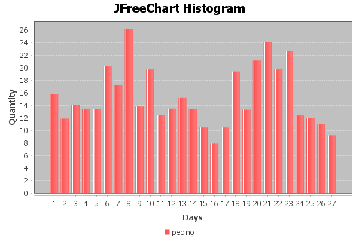
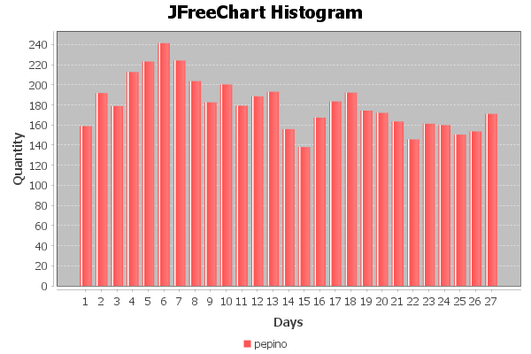
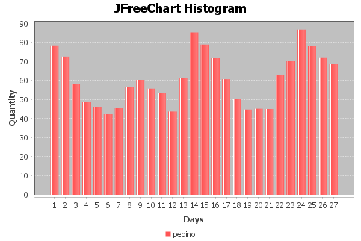
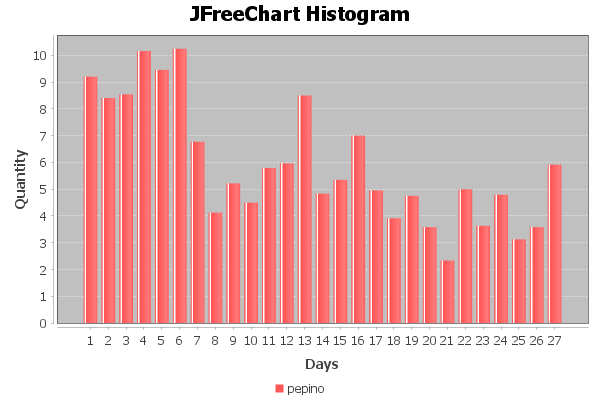
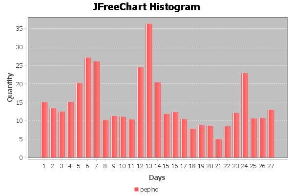
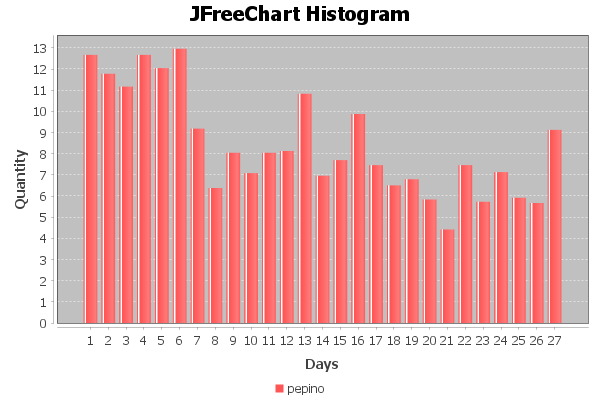
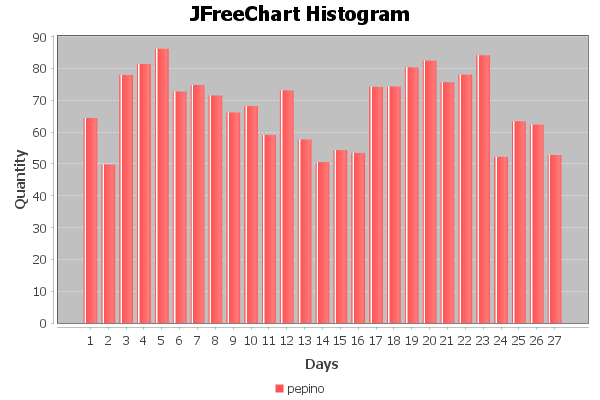

| Velocidad del viento |
|---|
| Average Velocidad del viento Monthly: 6.3004115069354025 m/s |
| Maximum Velocidad del viento Monthly: Date 20/09/2021 07:00:00 29.0 m/s |
| Minimum Velocidad del viento Monthly: Date 01/09/2021 02:00:00 1.0 m/s |
|  |
| Temperatura |
|---|
| Average Temperatura Monthly: 187.92026830602575 ºc |
| Maximum Temperatura Monthly: Date 05/09/2021 04:00:00 327.0 ºc |
| Minimum Temperatura Monthly: Date 19/09/2021 05:00:00 13.0 ºc |
|  |
| Humedad relativa |
|---|
| Average Humedad relativa Monthly: 58.24173934371383 % |
| Maximum Humedad relativa Monthly: Date 15/09/2021 05:00:00 93.0 % |
| Minimum Humedad relativa Monthly: Date 05/09/2021 04:00:00 26.0 % |
|  |
| Radiación solar |
|---|
| Average Radiación solar Monthly: 205.57330223366066 W/m2 |
| Maximum Radiación solar Monthly: Date 02/09/2021 01:00:00 968.0 W/m2 |
| Minimum Radiación solar Monthly: Date 01/09/2021 12:00:00 0.0 W/m2 |
|
| Precipitación |
|---|
| Average Precipitación Monthly: 0.466250682870547 l/m2 |
List of Precipitación monthly for Dates:
|
 |
| Dióxido de azufre |
|---|
| No disponible Data |
| Monóxido de carbono |
|---|
| No disponible Data |
| Monóxido de nitrógeno |
|---|
| Average Monóxido de nitrógeno Monthly: 5.174740023083157 µg/m³ |
| Maximum Monóxido de nitrógeno Monthly: Date 27/09/2021 08:00:00 107.0 µg/m³ |
| Minimum Monóxido de nitrógeno Monthly: Date 01/09/2021 12:00:00 1.0 µg/m³ |
 |
| Dióxido de nitrógeno |
|---|
| Average Dióxido de nitrógeno Monthly: 25.602504942152237 µg/m³ |
| Maximum Dióxido de nitrógeno Monthly: Date 19/09/2021 08:00:00 104.0 µg/m³ |
| Minimum Dióxido de nitrógeno Monthly: Date 01/09/2021 12:00:00 3.0 µg/m³ |
|  |
| Partículas en suspensión menor que PM2,5 |
|---|
| Average Partículas en suspensión menor que PM2,5 Monthly: 8.87153986648277 µg/m³ |
| Maximum Partículas en suspensión menor que PM2,5 Monthly: Date 23/09/2021 09:00:00 34.0 µg/m³ |
| Minimum Partículas en suspensión menor que PM2,5 Monthly: Date 04/09/2021 12:00:00 1.0 µg/m³ |
 |
| Partículas en suspensión menor que PM10 49 |
|---|
| Average Partículas en suspensión menor que PM10 49 Monthly: 15.778221819135878 microgramos por metro cúbico |
| Maximum Partículas en suspensión menor que PM10 49 Monthly: Date 13/09/2021 10:00:00 79.0 microgramos por metro cúbico |
| Minimum Partículas en suspensión menor que PM10 49 Monthly: Date 11/09/2021 04:00:00 1.0 microgramos por metro cúbico |
|  |
| Óxidos de nitrógeno |
|---|
| Average Óxidos de nitrógeno Monthly: 33.61526616414388 µg/m³ |
| Maximum Óxidos de nitrógeno Monthly: Date 27/09/2021 08:00:00 246.0 µg/m³ |
| Minimum Óxidos de nitrógeno Monthly: Date 01/09/2021 12:00:00 5.0 µg/m³ |
|  |
| Ozono |
|---|
| Average Ozono Monthly: 52.480928067807795 µg/m³ |
| Maximum Ozono Monthly: Date 04/09/2021 04:00:00 124.0 µg/m³ |
| Minimum Ozono Monthly: Date 12/09/2021 01:00:00 1.0 µg/m³ |
|  |
| Tolueno |
|---|
| No disponible Data |
| Black Carbon |
|---|
| No disponible Data |
| Benceno |
|---|
| No disponible Data |
| Hidrocarburos totales |
|---|
| No disponible Data |
| Hidrocarburos no metánicos |
|---|
| No disponible Data |
| MetaParaXileno |
|---|
| No disponible Data |